Azure Networking Specialty Daily Interactive Study Report
Revision: September 5, 2026 12:40 PT. This keeps today’s same twelve study topics while removing the repeated template prose. Each lesson is organized around what is actually useful for that feature: why it matters, architecture, implementation, verification, and command-driven troubleshooting.
Today’s 12 topics
- ExpressRoute Direct MACsec
- VPN Gateway custom IPsec/IKE policy
- ExpressRoute Metro
- IPsec over ExpressRoute with Virtual WAN
- VNet peering gateway transit
- Standard Load Balancer HA Ports
- Azure Public DNS DNSSEC
- Front Door Premium Private Link origins
- Azure Firewall Premium TLS inspection
- VNet Flow Logs and Traffic Analytics
- Network Watcher IP Flow Verify
- Azure Private Link Service
ExpressRoute Direct MACsec: encrypting the physical handoff
Why it matters
ExpressRoute gives private connectivity into Microsoft’s network, but “private” is not the same as “encrypted.” When an organization owns ExpressRoute Direct ports and its security policy requires encryption on the physical customer-to-Microsoft Ethernet handoff, MACsec is the relevant control. It encrypts Ethernet frames between the customer edge and Microsoft Enterprise Edge rather than creating an IPsec overlay. That distinction matters because the failure domain, key lifecycle, and troubleshooting evidence are different from VPN Gateway or application TLS.
The operational goal is to protect each Direct link while preserving redundancy. ExpressRoute Direct presents two physical links. Treat them independently during deployment and key rotation: establish and validate MACsec on one link, leave the second as a known-good path, then change the other. A simultaneous key error on both links can remove the entire ExpressRoute path even though the Azure circuit configuration itself is unchanged.
Architecture
MACsec is below BGP and Azure private peering. The customer router and Microsoft edge form the secure Layer-2 channel. BGP sessions and all routed traffic then traverse that encrypted link. Key material is represented by the Connectivity Association Key (CAK) and Connectivity Association Key Name (CKN); Azure Key Vault is used for the Microsoft-side integration described by the service. Port speed affects supported cipher choices; on higher-speed Direct ports Microsoft documents XPN cipher variants.
A useful mental model is: Key Vault and ExpressRoute port configuration are management/control concerns; the encrypted Ethernet secure channel is the forwarding mechanism; BGP is the routed control plane above it. If MACsec fails, the IP layer can disappear even though the ExpressRoute resource still shows as provisioned.
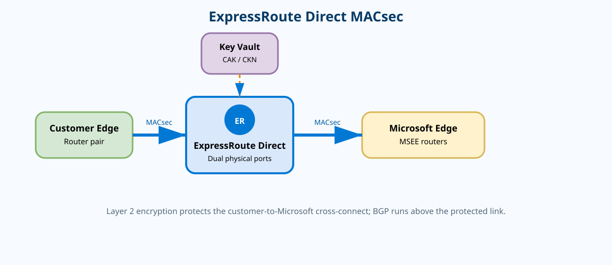
{kind=link}
Prerequisites and implementation
Use this only with ExpressRoute Direct, not a provider-provisioned circuit where you do not own the Microsoft-facing Direct ports. Verify the port resource, each physical link, the managed identity/Key Vault access design used for the secrets, and the cipher supported by the Direct port speed. The safest implementation sequence is inventory → Key Vault/identity readiness → configure link 1 → validate MACsec and BGP → move traffic/test → configure link 2.
az network express-route port show \
--resource-group <rg> \
--name <expressroute-direct-port> \
--output jsonc
az network express-route port link list \
--resource-group <rg> \
--port-name <expressroute-direct-port> \
--output table
# Review the current supported MACsec parameters before changing a link.
az network express-route port link update --help
# After CAK/CKN + Key Vault prerequisites are prepared, update one link,
# then validate it before modifying the second link.
# Use the exact current parameters shown by `--help` and Microsoft Learn.Because MACsec parameters include sensitive key/Key Vault details and CLI options can evolve, the report intentionally does not fabricate placeholder flags. The command group above is the current Azure CLI surface for ExpressRoute Direct MACsec management.
Verification
az network express-route port link show \
--resource-group <rg> \
--port-name <expressroute-direct-port> \
--name <link-name> \
--output jsonc{
"name": "link1",
"provisioningState": "Succeeded",
"macSecConfig": { "cipher": "GcmAesXpn256", "sciState": "Enabled" }
}Troubleshooting
If the ExpressRoute port is provisioned but BGP is down immediately after enabling MACsec, do not start by changing BGP. First inspect the link’s MACsec state and the CE secure-channel counters. A cipher mismatch or key mismatch prevents Ethernet delivery, so BGP never gets packets.
az network express-route port link show -g <rg> --port-name <port> -n <link> -o jsonc{ "provisioningState":"Succeeded", "macSecConfig":{"cipher":"GcmAesXpn256"} }
# Customer router: Secure Channel = DOWN, RxSecurePkts = 0VPN Gateway custom IPsec/IKE policy: controlling what the peers negotiate
Why it matters
A site-to-site VPN can be “up” only after both peers agree on compatible cryptographic proposals. Azure’s defaults work for many devices, but regulated environments, appliance standards, or interoperability constraints often require a custom policy. A custom policy lets you specify IKE encryption/integrity and Diffie-Hellman, IPsec encryption/integrity, PFS, and SA lifetimes. The important design point is that both endpoints must have a compatible set; a stronger Azure policy that the remote firewall cannot negotiate is simply a broken tunnel.
Architecture
IKE negotiation is the control-plane conversation. It authenticates peers, chooses the Phase 1/IKE cryptographic suite, and establishes the security association from which CHILD_SAs are created. The CHILD_SA is the data-plane protection for application packets. Traffic selectors determine which source/destination prefixes are eligible for the CHILD_SA. Route-based Azure VPN gateways normally work with broad selectors, but policy-based traffic selectors can be enabled for interoperability with specific peers; when that is used, Microsoft requires a custom IPsec/IKE policy.
This produces two separate failure classes: IKE failure, where no secure control relationship forms; and traffic-selector/data-SA failure, where IKE is established but the actual application flow has no matching CHILD_SA.
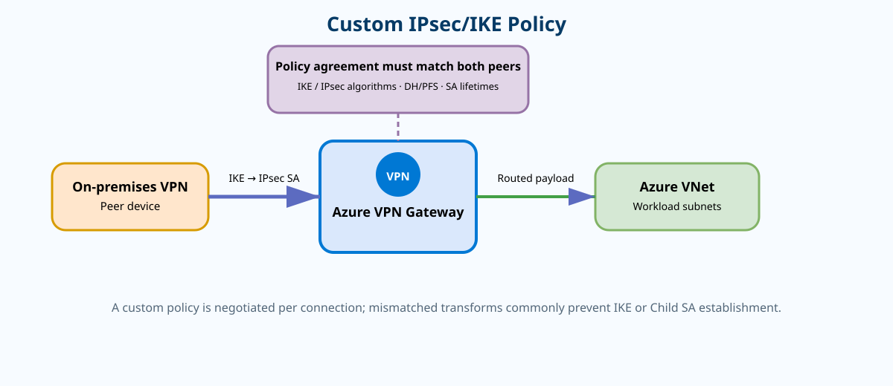
{kind=link}
Prerequisites and implementation
Have an existing route-based VPN Gateway, local network gateway, and S2S connection. Document the remote firewall’s supported algorithms before changing Azure. If using policy-based traffic selectors, document the exact local/remote prefix pairs because those selectors become part of Phase 2 interoperability.
az network vpn-connection ipsec-policy add \
--resource-group <rg> \
--connection-name <s2s-connection> \
--dh-group DHGroup14 \
--ike-encryption AES256 \
--ike-integrity SHA384 \
--ipsec-encryption AES256 \
--ipsec-integrity SHA256 \
--pfs-group PFS2048 \
--sa-lifetime 27000 \
--sa-max-size 102400000
az network vpn-connection ipsec-policy list \
--resource-group <rg> \
--connection-name <s2s-connection> \
--output tableThe example uses an explicit policy rather than Azure defaults. The remote peer must be configured to match. Changing only one side creates a negotiation outage until the proposals again overlap.
Verification
az network vpn-connection show \
-g <rg> -n <s2s-connection> \
--query "{status:connectionStatus,egress:egressBytesTransferred,ingress:ingressBytesTransferred}" \
-o json{
"status": "Connected",
"egress": 1843200,
"ingress": 2050048
}Connected proves tunnel state; increasing byte counters prove data is actually traversing it. On the peer firewall, verify matching IKE and IPsec SAs and inspect the negotiated algorithms.Troubleshooting
When connectionStatus remains NotConnected, compare the Azure policy with the remote proposal. When status is Connected but byte counters do not move, focus on selectors, routes, and the actual protected prefixes rather than IKE.
{ "status":"Connected", "egress":0, "ingress":0 }
Peer firewall: IKE SA = UP; IPsec CHILD_SA for 10.20.0.0/16 -> 10.50.0.0/16 = absentExpressRoute Metro: resilience across two peering sites in one metro
Why it matters
A normal ExpressRoute circuit already has redundant connections, but those redundant paths terminate within a peering location. A peering-location outage is therefore a larger failure domain than a single router or link failure. ExpressRoute Metro addresses that failure domain by dual-homing the service across two distinct ExpressRoute peering locations in the same metropolitan area. It is useful when the business wants private-cloud connectivity to survive loss or isolation of one metro peering site without building a separate intercity design.
Architecture
Metro gives you two Microsoft peering-location failure domains. The customer/provider side must still deliver real path diversity to both locations; Metro does not magically make your carrier last mile diverse. BGP is established over each path, and the customer network should advertise the required prefixes on both. Normal routing policy determines which path is active or preferred. The resiliency benefit appears only if the second path is independently reachable and sized for production traffic.
For a provider circuit, the provider extends connectivity to both peering locations. ExpressRoute Direct can also be used in a Metro configuration. Migration from a standard circuit is normally treated as building the Metro circuit in parallel, validating it, then moving traffic rather than converting an existing circuit in place.
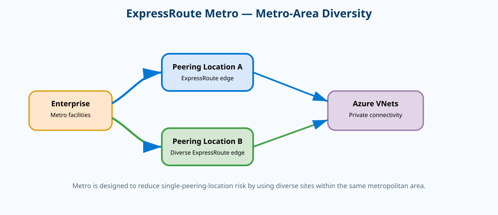
{kind=link}
Prerequisites and implementation
First confirm the Metro location and provider support. Then verify that your carrier design actually reaches both facilities through independent paths. The Azure CLI can discover providers/peering locations and inspect the resulting circuit and peerings. Creation may use the normal ExpressRoute circuit or Direct workflow with a Metro-capable location.
az network express-route list-service-providers --output table
az network express-route show \
--resource-group <rg> \
--name <metro-circuit> \
--output jsonc
az network express-route peering list \
--resource-group <rg> \
--circuit-name <metro-circuit> \
--output tableVerification
Azure provisioning state is only the first check. Verify every customer edge learns Azure routes and advertises the required on-premises routes over both peering-location paths. Then fail one path intentionally in a maintenance window and verify traffic moves without route blackholing.
Name PeeringType PeeringState ProvisioningState
--------------- ------------- -------------- -----------------
AzurePrivate AzurePrivate Enabled Succeeded
Circuit serviceProviderProvisioningState: ProvisionedTroubleshooting
A frequent design mistake is assuming “Metro” proves end-to-end diversity. If both carrier access circuits share the same conduit, device, or carrier aggregation node, a local failure can still remove both.
az network express-route show -g <rg> -n <metro-circuit> \
--query "{providerState:serviceProviderProvisioningState,circuitState:circuitProvisioningState}" -o json{ "providerState":"Provisioned", "circuitState":"Enabled" }
CE-B: BGP = IdleIPsec over ExpressRoute with Virtual WAN: encrypted overlay on private transport
Why it matters
Some organizations need both the predictable private transport of ExpressRoute and cryptographic protection at Layer 3. In Virtual WAN, a design can use ExpressRoute as the underlay path that reaches VPN endpoints while an IPsec tunnel provides encryption over that private path. This is different from MACsec: MACsec protects the local Direct Ethernet link, whereas this design creates an IPsec overlay whose encrypted boundary is between VPN peers.
Architecture
Think in three layers. Underlay: ExpressRoute provides reachability to the private VPN peer addresses. Overlay control plane: IKE negotiates the Virtual WAN VPN connection. Overlay data plane: application prefixes travel inside ESP/IPsec and are then routed by the Virtual WAN hub after decryption. Each layer can fail independently.
The most useful troubleshooting rule is therefore ordered: prove underlay reachability first, prove IKE/IPsec second, prove post-decryption routing third. If you reverse that order, you can waste time examining Virtual WAN route tables when the VPN peer addresses themselves are unreachable over ExpressRoute.
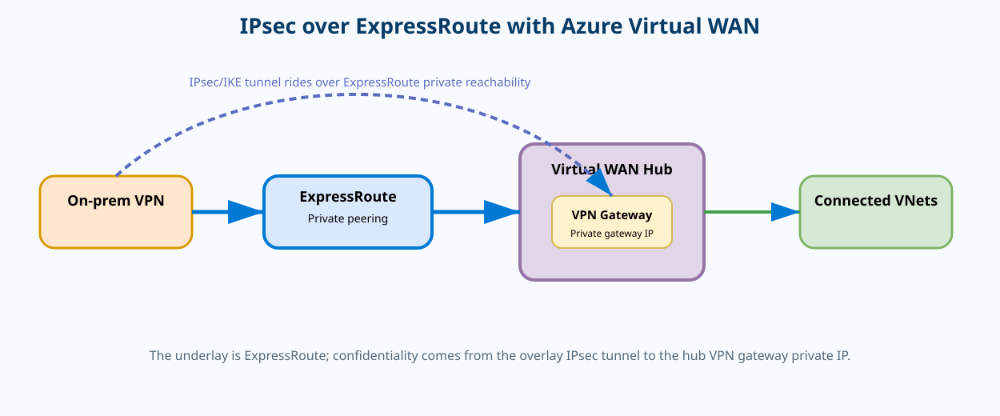
{kind=link}
Prerequisites and implementation
You need a Virtual WAN virtual hub with both ExpressRoute and VPN capability, an ExpressRoute connection that can route to the on-premises VPN endpoint, and a Virtual WAN VPN site/connection. The virtual-wan Azure CLI extension provides the Virtual WAN connection IPsec policy surface.
az network vpn-gateway connection show \
--resource-group <rg> \
--gateway-name <vwan-vpn-gateway> \
--name <connection> \
--output jsonc
az network vpn-gateway connection ipsec-policy add \
--resource-group <rg> \
--gateway-name <vwan-vpn-gateway> \
--connection-name <connection> \
--dh-group DHGroup14 \
--ike-encryption AES256 \
--ike-integrity SHA256 \
--ipsec-encryption AES256 \
--ipsec-integrity SHA256 \
--pfs-group PFS2048 \
--sa-lifetime 27000 \
--sa-max-size 102400000Verification
az network vpn-gateway connection ipsec-policy list \
-g <rg> --gateway-name <vwan-vpn-gateway> \
--connection-name <connection> -o table
az network vpn-gateway connection show \
-g <rg> --gateway-name <vwan-vpn-gateway> -n <connection> \
--query "{status:connectionStatus,provisioning:provisioningState}" -o json{ "status":"Connected", "provisioning":"Succeeded" }Troubleshooting
connectionStatus: NotConnected
On-premises route lookup for Azure VPN peer: no route / wrong next hopVNet peering gateway transit: sharing one hybrid gateway with spokes
Why it matters
Hub-and-spoke networks often centralize an ExpressRoute or VPN gateway in the hub. Without gateway transit, every spoke would need its own hybrid gateway or another transit design. Gateway transit lets the hub expose its gateway to peered spokes while keeping gateway ownership centralized.
Architecture
The configuration is directional. On the hub-to-spoke peering, allowGatewayTransit advertises the hub gateway for use by peers. On the spoke-to-hub peering, useRemoteGateways tells the spoke to consume that remote gateway. Those flags are not interchangeable. The effective route table on a spoke NIC is the best evidence that the spoke actually learned on-premises prefixes through the remote gateway.
Gateway transit is not general transitive peering. Spoke A does not automatically become reachable from Spoke B merely because both use the hub gateway. Spoke-to-spoke connectivity still depends on peering, routing through an NVA, Virtual WAN, or another explicit transit mechanism.
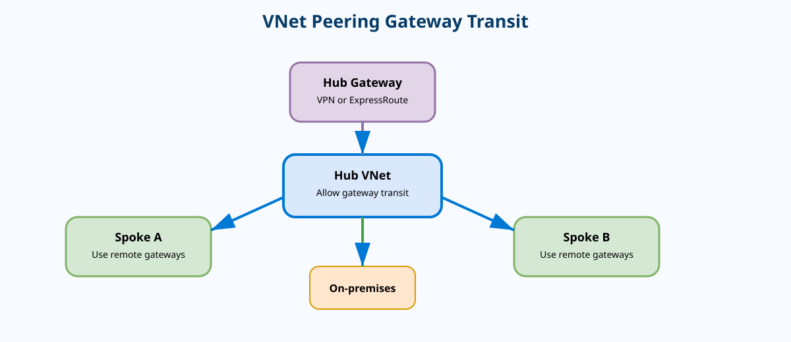
{kind=link}
Prerequisites and implementation
The hub needs a supported VPN or ExpressRoute virtual network gateway and a VNet peering to the spoke. Address spaces must not overlap. Configure the flags on the correct direction of the peering.
az network vnet peering update \
-g <rg> --vnet-name <hub-vnet> \
-n <hub-to-spoke> \
--set allowGatewayTransit=true
az network vnet peering update \
-g <rg> --vnet-name <spoke-vnet> \
-n <spoke-to-hub> \
--set useRemoteGateways=trueVerification
az network vnet peering show -g <rg> --vnet-name <hub-vnet> -n <hub-to-spoke> \
--query "{state:peeringState,allowGatewayTransit:allowGatewayTransit}" -o json
az network vnet peering show -g <rg> --vnet-name <spoke-vnet> -n <spoke-to-hub> \
--query "{state:peeringState,useRemoteGateways:useRemoteGateways}" -o json
az network nic show-effective-route-table -g <rg> -n <spoke-nic> -o table{ "state":"Connected", "allowGatewayTransit":true }
{ "state":"Connected", "useRemoteGateways":true }
Source State Address Prefix Next Hop Type
-------------- ------ ----------------- -------------
VirtualNetwork Active 10.200.0.0/16 VirtualNetworkGatewayVirtualNetworkGateway on the spoke NIC confirms the route is actually usable by the VM.Troubleshooting
Peering state: Connected
useRemoteGateways: false
Effective route table: no 10.200.0.0/16 routeStandard Load Balancer HA Ports: one rule for all ports and protocols
Why it matters
Network virtual appliances usually need to inspect arbitrary TCP, UDP, and sometimes other IP flows. Creating a separate load-balancing rule for every port is not practical. An internal Standard Load Balancer HA Ports rule uses protocol All and frontend/backend port 0 so a single rule can distribute all relevant flows to healthy NVA instances.
Architecture
The frontend IP becomes the next hop that UDRs can target for an NVA scale set or pair. The health probe determines which NVA instances are eligible. The load balancer is flow-based; it does not understand firewall session state. If the firewall requires symmetric traffic, the overall route design must make forward and return flows traverse a compatible appliance/session path. Floating IP/direct server return settings are also relevant in some NVA architectures because the appliance often needs to see the original destination address.
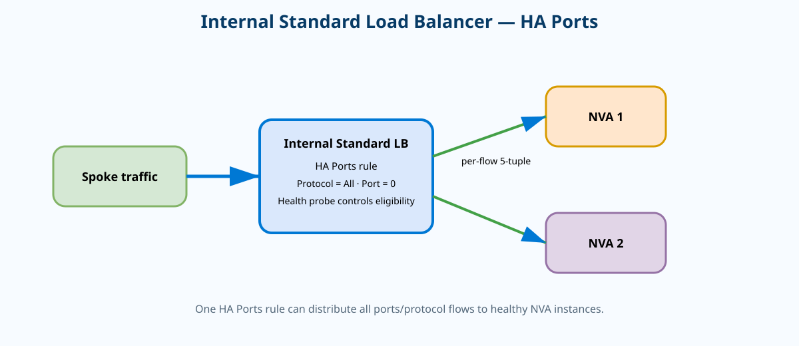
{kind=link}
Prerequisites and implementation
Create an internal Standard Load Balancer, frontend IP, backend pool containing the NVA NIC/IP configurations, and a probe that represents NVA readiness. Then create the HA Ports rule.
az network lb rule create \
--resource-group <rg> \
--lb-name <internal-lb> \
--name ha-ports \
--protocol All \
--frontend-port 0 \
--backend-port 0 \
--frontend-ip-name <frontend-config> \
--backend-pool-name <nva-pool> \
--probe-name <health-probe>
az network lb rule show -g <rg> --lb-name <internal-lb> -n ha-ports -o jsoncVerification
{
"protocol": "All",
"frontendPort": 0,
"backendPort": 0,
"provisioningState": "Succeeded"
}Troubleshooting
If the rule exists but only one NVA receives traffic, inspect probe health and backend-pool membership. If both receive traffic but stateful sessions reset, inspect return-path symmetry rather than changing the HA Ports rule.
Rule: protocol=All, frontendPort=0, backendPort=0, provisioningState=Succeeded
Backend health: nva01=Healthy, nva02=UnhealthyAzure Public DNS DNSSEC: proving that DNS answers are authentic
Why it matters
DNSSEC protects DNS integrity, not confidentiality. A DNSSEC-validating resolver can verify that a DNS answer is cryptographically tied to the signed zone and its parent chain of trust. That reduces the risk of accepting forged or modified DNS responses. For a public Azure DNS zone, the operationally important pieces are zone signing, DNSKEY/RRSIG records, the DS record published in the parent zone, and validation by recursive resolvers.
Architecture
The child zone contains DNSKEY records and signatures over record sets. The parent zone contains a DS record that points to the child’s key material. A validating resolver starts with a trusted root and walks the chain through parent DS to child DNSKEY. If the DS record is wrong or stale after a key change, the zone can become bogus to validating clients even though authoritative servers still answer normally.
That means DNSSEC rollout has two control planes: Azure zone signing and registrar/parent delegation. Both must be correct. Testing only nslookup against a non-validating resolver can miss a broken chain.
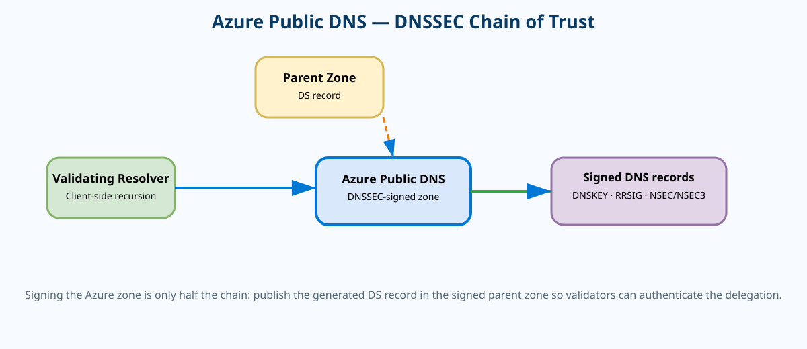
{kind=link}
Prerequisites and implementation
Start with an Azure Public DNS zone and control of the registrar/parent zone so the DS record can be published. DNSSEC support and command surfaces evolve, so inspect the current Azure CLI zone capabilities and follow the Microsoft DNSSEC workflow rather than assuming a legacy syntax.
az network dns zone show -g <rg> -n <zone-name> -o jsonc
az network dns zone --help
# After enabling DNSSEC using the current Microsoft-supported workflow,
# inspect the zone state and obtain the DS information that must be
# published at the registrar/parent.Verification
Use a validating DNS tool such as dig +dnssec. The ad (Authenticated Data) flag is strong evidence that the recursive resolver validated the answer. Inspect DNSKEY and DS records directly.
$ dig +dnssec www.example.com A
;; flags: qr rd ra ad; QUERY: 1, ANSWER: 1
www.example.com. 300 IN A 203.0.113.20
$ dig +dnssec example.com DNSKEY
;; ANSWER SECTION includes DNSKEY + RRSIG
$ dig +dnssec example.com DS
;; parent response includes matching DSad flag and matching DS/DNSKEY chain are the relevant success indicators.Troubleshooting
$ dig www.example.com @1.1.1.1
;; ->>HEADER<<- status: SERVFAIL
$ dig +cdflag +dnssec www.example.com @1.1.1.1
;; returns data when validation is disabledFront Door Premium Private Link origins: public edge, private backend
Why it matters
Azure Front Door is a global public edge service, but the application origin does not have to be directly exposed to the public Internet. Front Door Premium can connect to supported origins using Private Link. The user still reaches Front Door’s public endpoint; Front Door then reaches the origin over an approved private endpoint relationship. This is valuable when you want global anycast/WAF/edge acceleration while keeping the backend reachable only through private connectivity.
Architecture
Client DNS resolves the Front Door endpoint. TLS and HTTP routing occur at Front Door. The selected origin group contains a Private-Link-enabled origin. Azure creates a private endpoint request against the origin resource; an operator must approve it. Only after approval and establishment can health probes and production requests traverse the private path. Origin host headers and certificates still matter because Private Link changes connectivity, not HTTP/TLS application semantics.
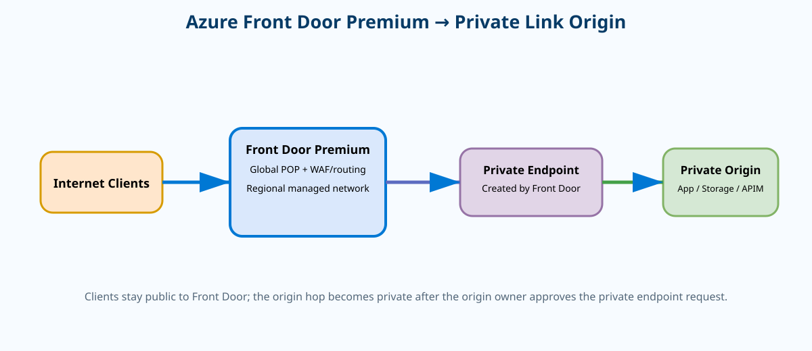
{kind=link}
Prerequisites and implementation
Use Front Door Premium and a supported origin resource/subresource. Create the origin group, then create an origin with Private Link enabled and the origin resource ID, private-link region, and subresource type. The example follows the current Azure CLI pattern.
az afd origin-group create \
-g <rg> --profile-name <afd-profile> \
--origin-group-name <origin-group> \
--probe-request-type GET \
--probe-protocol Https \
--probe-path /health \
--probe-interval-in-seconds 60
az afd origin create \
--resource-group <rg> \
--profile-name <afd-profile> \
--origin-group-name <origin-group> \
--origin-name <origin-name> \
--host-name <origin-fqdn> \
--origin-host-header <origin-fqdn> \
--https-port 443 \
--enable-private-link true \
--private-link-location <region> \
--private-link-resource <origin-resource-id> \
--private-link-sub-resource-type <subresource>Verification
az afd origin show -g <rg> --profile-name <afd-profile> \
--origin-group-name <origin-group> -n <origin-name> -o jsonc{
"enabledState": "Enabled",
"sharedPrivateLinkResource": { "status": "Approved" },
"provisioningState": "Succeeded"
}Troubleshooting
sharedPrivateLinkResource.status: Pending
Origin health: UnhealthyAzure Firewall Premium TLS inspection: decrypt, inspect, re-encrypt
Why it matters
Without TLS inspection, a firewall can make decisions from metadata such as IP addresses and SNI/FQDN, but the application payload remains encrypted. Azure Firewall Premium TLS inspection lets the firewall terminate the client TLS session, inspect the decrypted traffic with advanced controls such as IDPS, then establish a new TLS session to the destination. This adds visibility but also inserts the firewall into certificate trust, so the PKI design becomes part of the network design.
Architecture
The client connects toward an HTTPS destination through Azure Firewall. The firewall presents a dynamically generated certificate signed by a CA trusted by the client. After decrypting and inspecting, the firewall independently validates/connects to the real server certificate. Therefore the client must trust the enterprise/intermediate CA configured for TLS inspection. If it does not, users see certificate errors even though TCP routing and firewall policy may be correct.
Do not confuse TLS inspection with simple HTTPS allow-listing. Application rules can use FQDNs without decrypting payloads; TLS inspection is required when the security control needs content-level visibility.
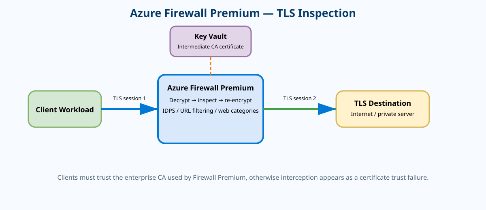
{kind=link}
Prerequisites and implementation
Use Azure Firewall Premium and a Firewall Policy. Prepare the certificate authority/key material using the Microsoft-supported Key Vault/certificate approach and distribute trust to clients. Then enable TLS inspection on the relevant application rule collection/rules rather than attempting to inspect everything blindly.
# Inspect policy tier and TLS-related policy state.
az network firewall policy show \
-g <rg> -n <firewall-policy> -o jsonc
# Inspect rule collection groups where TLS inspection is enabled.
az network firewall policy rule-collection-group list \
-g <rg> --policy-name <firewall-policy> -o table
# Use the current Firewall Policy CLI/ARM/Terraform schema to bind the
# Key Vault-backed CA and enable terminateTLS on intended application rules.Verification
Test with a client that trusts the inspection CA. Check the browser/curl certificate issuer; it should show the enterprise inspection issuer rather than the public site’s original leaf issuer. Then confirm the request is logged by Firewall and that IDPS/application rule behavior applies.
$ curl -Iv https://www.example.com
* SSL connection using TLSv1.3
* Server certificate:
* subject: CN=www.example.com
* issuer: CN=Corp-Azure-Firewall-Inspection-CA
< HTTP/2 200Troubleshooting
$ curl -Iv https://www.example.com
SSL certificate problem: unable to get local issuer certificateVirtual Network Flow Logs and Traffic Analytics: Layer-4 evidence at VNet scope
Why it matters
Flow logs answer questions such as “which source talked to which destination, on what port, and was traffic observed?” without requiring a packet capture on every VM. VNet flow logs broaden observability to the virtual network level and can send records to a storage account; Traffic Analytics processes those records into Log Analytics for higher-level patterns and visualizations. They are excellent for connection inventory, unexpected egress, traffic-volume analysis, and corroborating firewall/NSG events.
Architecture
The monitored VNet produces flow records. A storage account stores the raw flow-log data. When Traffic Analytics is enabled, the flow-log resource references a Log Analytics workspace and Azure processes the records on the configured interval. This is not packet capture: flow logs summarize conversations and state at Layer 3/4; they do not contain payloads, TLS handshakes, or application transactions.
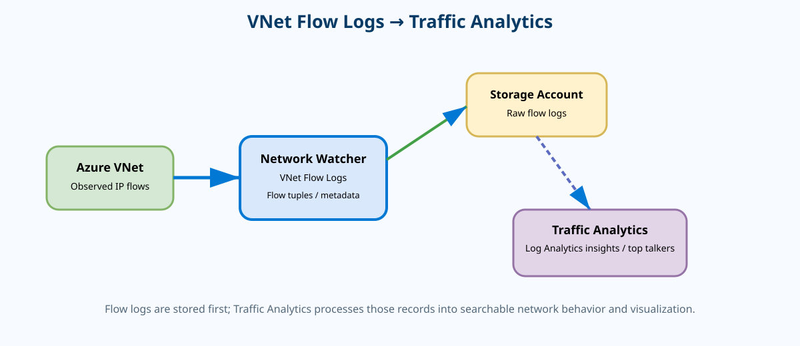
{kind=link}
Prerequisites and implementation
az monitor log-analytics workspace create \
--resource-group <rg> \
--name <workspace> \
--location <region>
az network watcher flow-log create \
--location <region> \
--resource-group <rg> \
--name <flow-log-name> \
--vnet <vnet-name> \
--storage-account <storage-account> \
--traffic-analytics true \
--workspace <workspace> \
--interval 10Verification
az network watcher flow-log show \
--location <region> \
--resource-group <rg> \
--name <flow-log-name> \
--output jsonc{
"enabled": true,
"flowAnalyticsConfiguration": {
"networkWatcherFlowAnalyticsConfiguration": {
"enabled": true,
"trafficAnalyticsInterval": 10
}
},
"provisioningState": "Succeeded"
}Troubleshooting
enabled: true
provisioningState: Succeeded
Traffic Analytics workspace: configured
Storage account: no new flow-log blobsNetwork Watcher IP Flow Verify: identify the exact NSG decision
Why it matters
When a VM cannot communicate, engineers often stare at multiple NSGs and try to mentally merge subnet rules, NIC rules, priorities, service tags, and defaults. IP Flow Verify asks Azure to evaluate one exact five-tuple and tell you whether the flow is allowed or denied and which rule caused the result. It narrows the question from “is networking broken?” to “would Azure’s NSG logic allow this packet?”
Architecture
The input is a VM/NIC context, direction, protocol, local IP/port, and remote IP/port. Azure evaluates the effective security policy and returns Allow or Deny plus the responsible rule. It does not send an actual application packet. Therefore an Allow result does not prove routing, guest OS firewall, listener health, load balancer behavior, or application response.
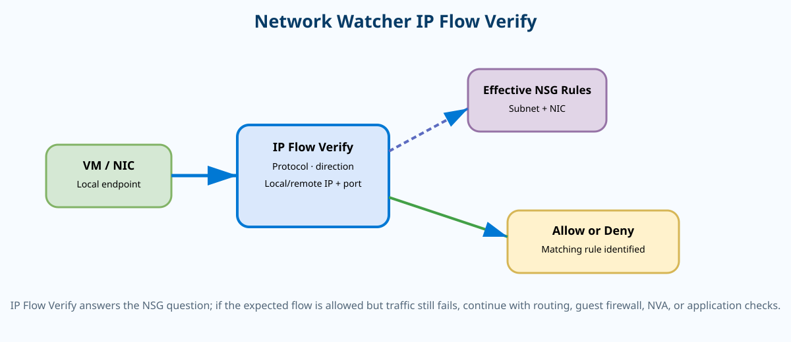
{kind=link}
Prerequisites and implementation
Use Network Watcher in the VM’s region and know the exact source/destination tuple you are testing. Test both directions when necessary because inbound and outbound policy can differ.
az network watcher test-ip-flow \
--resource-group <rg> \
--vm <vm-name> \
--direction Inbound \
--protocol TCP \
--local <vm-private-ip>:443 \
--remote <client-ip>:50000
az network nic show-effective-nsg \
--resource-group <rg> \
--name <vm-nic>Verification
{
"access": "Allow",
"ruleName": "securityRules/Allow-Https"
}Troubleshooting
{
"access": "Deny",
"ruleName": "defaultSecurityRules/DenyAllInBound"
}Azure Private Link Service: publish your own service privately
Why it matters
Private Endpoint is often discussed as a way to consume Microsoft PaaS privately, but Private Link Service lets you become the provider. You place your application behind a Standard Load Balancer and expose that frontend through a Private Link Service. Consumers create private endpoints in their own VNets—even across subscriptions or tenants when permissions/approval allow—without VNet peering and without exposing your service directly to the public Internet.
Architecture
The provider side contains an application backend pool, a Standard Load Balancer frontend, and the Private Link Service bound to that frontend. The consumer side creates a private endpoint whose NIC receives a private IP from the consumer VNet. Azure Private Link carries the connection to the provider service. The provider approves or rejects endpoint connection requests unless auto-approval is configured.
DNS is deliberately separate from connectivity. The consumer must resolve the application name to the consumer private endpoint IP. If DNS still resolves to a public address or directly to the provider load balancer, Private Link connectivity can be perfectly configured while the application uses the wrong path.
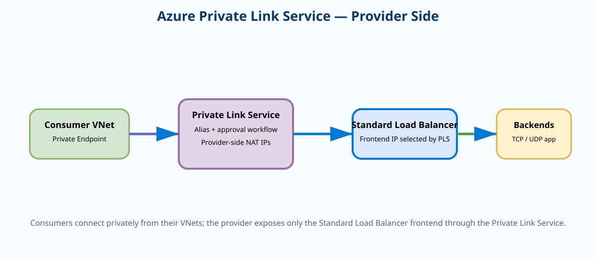
{kind=link}
Prerequisites and implementation
The provider subnet must have Private Link Service network policies disabled. A Standard Load Balancer frontend must already point to the application. Then create the service and a consumer private endpoint.
az network vnet subnet update \
-g <rg> --vnet-name <provider-vnet> \
-n <provider-subnet> \
--private-link-service-network-policies Disabled
az network private-link-service create \
--resource-group <rg> \
--name <pls-name> \
--vnet-name <provider-vnet> \
--subnet <provider-subnet> \
--lb-name <standard-lb> \
--lb-frontend-ip-configs <frontend-config> \
--location <region>
PLS_ID=$(az network private-link-service show -g <rg> -n <pls-name> --query id -o tsv)
az network private-endpoint create \
--resource-group <consumer-rg> \
--name <private-endpoint> \
--vnet-name <consumer-vnet> \
--subnet <consumer-subnet> \
--private-connection-resource-id "$PLS_ID" \
--connection-name <connection-name> \
--manual-request falseVerification
az network private-link-service show -g <rg> -n <pls-name> -o jsonc
az network private-link-service connection list -g <rg> --name <pls-name> -o table
az network private-endpoint show -g <consumer-rg> -n <private-endpoint> -o jsoncPrivate Link Service provisioningState: Succeeded
Connection status: Approved
Private Endpoint provisioningState: Succeeded
Consumer PE NIC private IP: 10.50.1.4Troubleshooting
Connection status: Pending
nslookup app.internal.example
Address: 203.0.113.5050-question interactive quiz
The quiz keeps the required domain distribution: 15 Hybrid connectivity and architecture, 13 Core networking infrastructure, 10 Routing and traffic management, and 12 Security/monitoring/private service access.